Tony Soprano
Patriarca / JefeCapo de la familia criminal DiMeo. Lidia con ataques de pánico, una doble vida entre la mafia y su hogar, y complejas sesiones de terapia con la Dra. Melfi.
Conocé a los protagonistas de esta historia entre el crimen y los suburbios de Nueva Jersey.
Capo de la familia criminal DiMeo. Lidia con ataques de pánico, una doble vida entre la mafia y su hogar, y complejas sesiones de terapia con la Dra. Melfi.
La columna vertebral de la casa. Lucha constantemente con la culpa y la moralidad de financiar su cómoda vida con el dinero sucio de los negocios de Tony.
La hija brillante de Tony y Carmela. Comienza la serie como una adolescente rebelde y evoluciona intentando alejarse del mundo de la mafia, aunque a menudo termina justificándolo.

Anthony Jr. (A.J.). Lidia con crisis existenciales, depresión y la desconexión entre el opulente estilo de vida de su familia y la cruda realidad del negocio criminal.
El hermano mayor del padre de Tony. Se resiste a quedar relegado dentro de la organización, lo que lo enfrenta a su sobrino una y otra vez.
Amarga, manipuladora y experta en hacerse la víctima. Su sombra explica buena parte de los problemas que Tony lleva al consultorio.
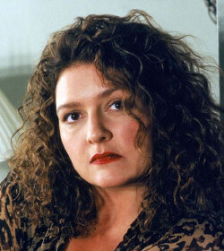
Vuelve a Nueva Jersey después de años lejos. Alterna entre la espiritualidad new age y una ambición bastante parecida a la de su madre.
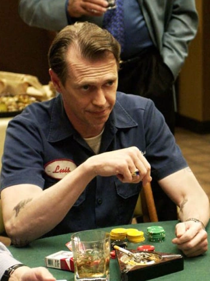
Sale de prisión después de años con la intención de dejar el negocio y llevar una vida tranquila. Las viejas costumbres le duran poco.
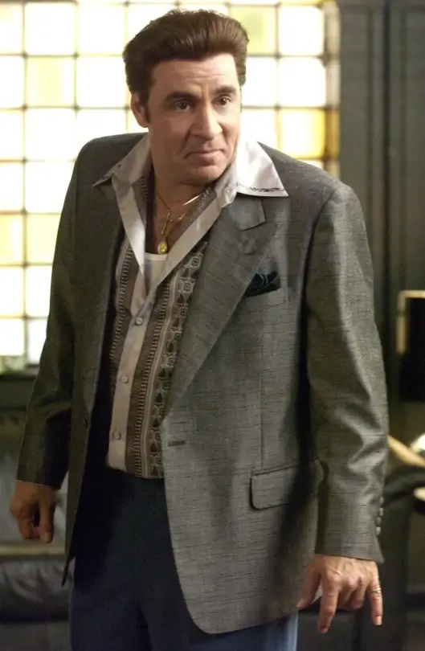
La mano derecha de Tony y dueño del Bada Bing. Discreto, medido y el que suele bajar la línea cuando los demás pierden la cabeza.
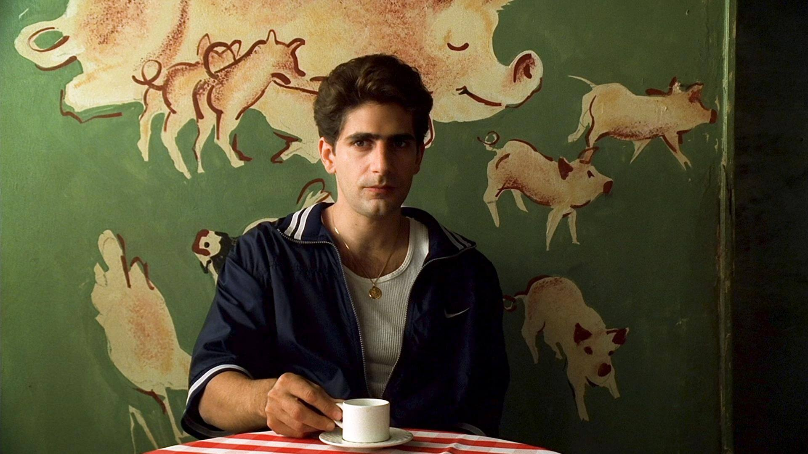
Primo (por parte de Carmela) y protegido de Tony. Ambiciona triunfar en el cine mientras lucha crónicamente con sus adicciones y su lealtad.
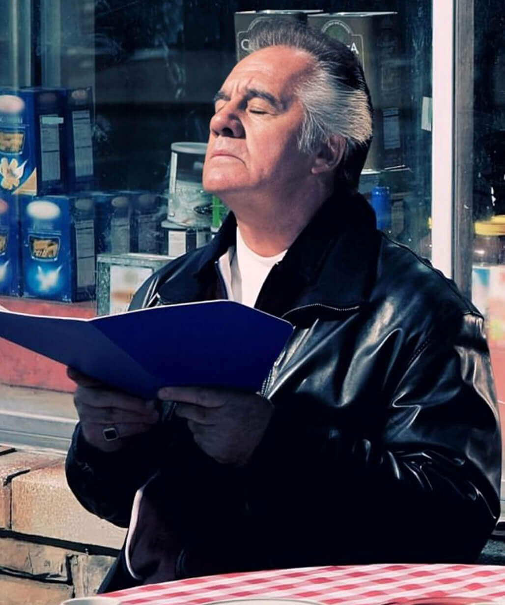
Un veterano leal pero extremadamente volátil y supersticioso de la organización de Tony, conocido por su característico peinado y su humor negro.
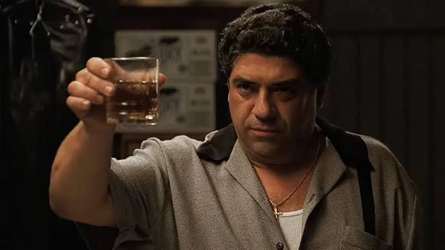
Amigo de Tony desde la infancia y parte del círculo íntimo. Su ausencia repentina despierta sospechas que nadie quiere confirmar.
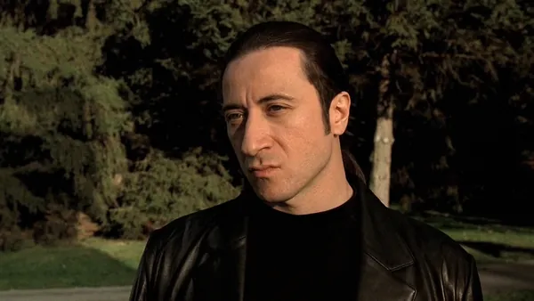
Traído desde Nápoles para trabajar con Tony. Callado y temido, pero con un costado sensible que lo mete en problemas.
La profesional que intenta tratar los profundos ataques de pánico de Tony, enfrentando el dilema ético constante de tratar a un criminal peligroso.
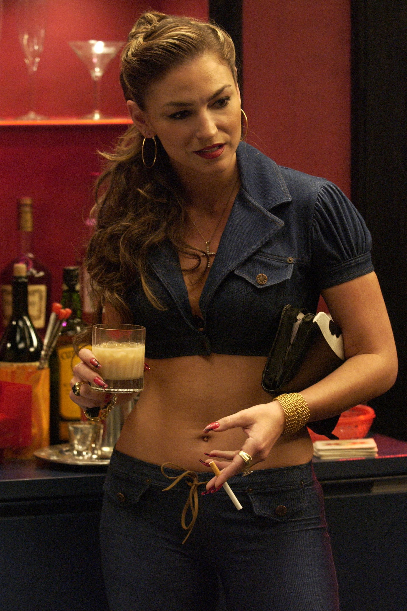
Sueña con abrir su propio local y salir del ambiente. Termina atrapada entre la lealtad a Christopher y una presión que no puede manejar sola.
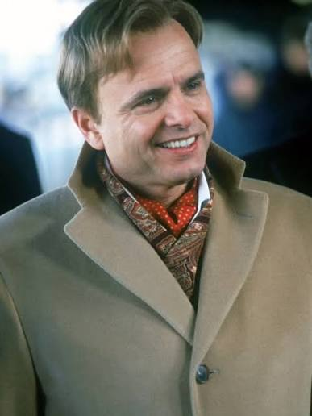
Rentable para el negocio y un desastre para todo lo demás. Su falta de límites lo pone en la mira de Tony más de una vez.
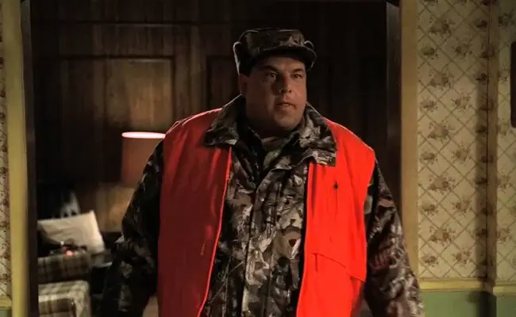
El más tranquilo del grupo. Hombre de familia, leal y poco dado a la violencia, lo que lo vuelve una rareza en ese ambiente.
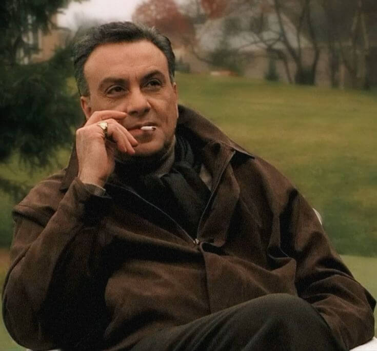
Elegante y calculador. Su relación con Tony oscila entre la sociedad conveniente y la amenaza latente.
Rencoroso y de código rígido después de veinte años preso. Se convierte en el rival más duro que enfrenta Tony.
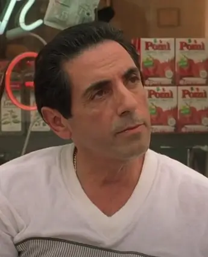
Vuelve del penal creyendo que el mundo lo esperó. Choca de frente con la autoridad de Tony desde el primer día.
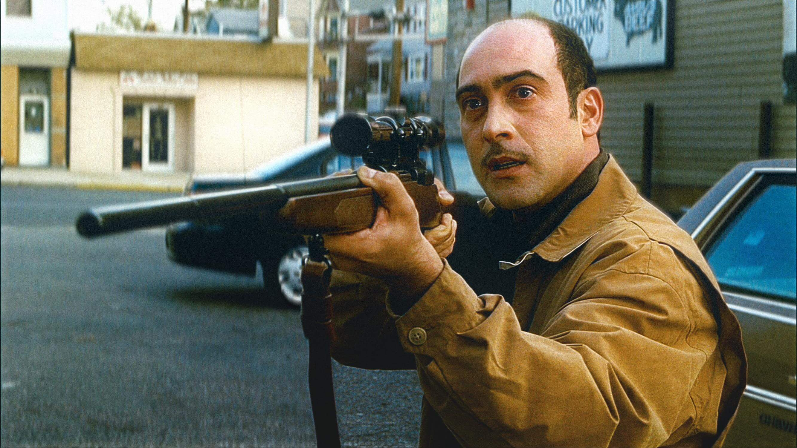
Dueño del restaurante Vesuvio. El único del grupo que se ganó la vida honestamente, aunque vive tentado por el atajo.
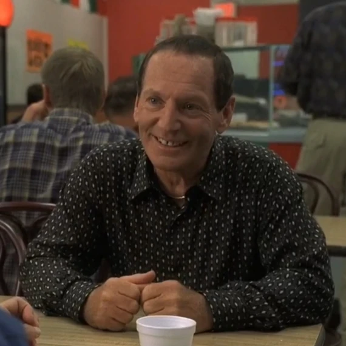
Ex asociado que dejó el ambiente para poner su propio local. Un viejo rencor con Richie Aprile le cambia la vida de la peor manera.
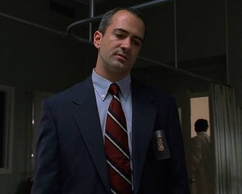
El agente que sigue a la familia durante años. Con el tiempo, su relación con Tony se vuelve más ambigua de lo que debería.